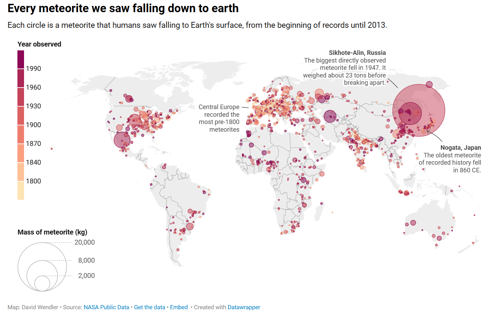

The Exercise

For this portfolio exercise, I selected David Wendler’s data visualisation Every meteorite we saw falling down to Earth. The visualisation displays meteorites that were observed falling down to Earth, which included all available records up until 2013. Each circle represents a meteorite that was observed, with its position showing where it had landed. Furthermore, the colours indicate the year in which it was observed, and its size represents its recorded mass in kilograms, as evident in the legends along the lefthand side. The visualisation also included annotations that identify important events, however, the majority of this analysis will focus on the individual data points rather than the annotations themselves. Ultimately, it is important to note that the geographic patterns within this visualisation are influenced by observation capabilities and notably, population of the respective regions.
Analysis
1. What aspect of your chosen visualisation first grabbed your attention? Explain the feature in terms of preattentive processing.
Immediately, the feature that first grabbed my attention was the significantly large circle toward eastern Russia, which represents the Sikhote-Alin meteorite, according to its annotation. Size may be considered a preattentive visual attribute, specifically when identifying stark similarities and differences within the data; in this case, the size of this data point is quickly identified before I could actively read the annotations or look at the legends. It evidently stands out from the rest of the map due to the significant contrast between the very large circle and the large number of smaller circles surrounding it. This immediately implied that this meteorite was abnormally massive, and its purple-pink hue and location increased its visibility even further. Thus, while it’s often objects of similar shape, size and colour that draw the viewer’s attention, specifically towards making connections between different data points, this specific circle element has the opposite effect; exhibiting a less common colour, a fairly ‘quiet’ location and a large-size difference ensures that it stands out immediately and emphasises its importance.
2. Explain one Gestalt law that your chosen visualisation demonstrates.
The Gestalt Law of Proximity, which states that objects that are located near to each other tend to be recognised as belonging to the same group, is clearly demonstrated in this visualisation. The closely spaced circles form visible clusters, especially throughout Europe, North America, Japan, and India and as a result, prior to independently examining each meteorite observation on the map, the viewer is more inclined to see regional trends based off of these evident clusters. As a result of this, the law of proximity aids in identifying geographic patterns, and allows for further questioning in regard to why some meteorite observations are more common in some regions than others.
3. Choose one of the quantitative variables visualised and discuss its visual accuracy.
One quantitative variable visualised is the meteorite mass in kilograms, where the area of each circle represents some recorded mass. This alone allows for exceptionally massive meteorite observations to be recognised easily, as they appear much larger than the typical meteorite recordings. However, since the viewers must compare each circle’s area with the scale included at the bottom lefthand side, rather than evaluating a position or length along an axis, area is not a visually accurate method of distinguishing the masses of the recorded meteorites. For example, it is very simple to establish that the Sikhote-Alin meteorite was far heavier than the majority of other meteorites, but it is increasingly difficult to determine how much heavier it is in comparison to some other meteorite, and its actual mass. Additionally, the area of some data points that are not directly included on the scale are even more difficult to determine the mass of, leading to a much larger need for estimation. As a result, it is useful for finding regional patterns, but more data would be required for mass comparisons and determinations.